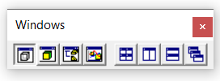
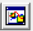

1.5.3.2 Windows Toolbar
The Windows toolbar controls the opening and closing of child windows, and includes four commands to automatically arrange them on the screen:
The toolbar contains the following commands:

NOTES:
(1) When the 2D Sketch, 3D Model, and Optimization windows are open simultaneously, and the CSG window is closed, the Grid layout command will position the 2D Sketch window on the left side of the main window, and arrange the other two windows vertically on the right side.